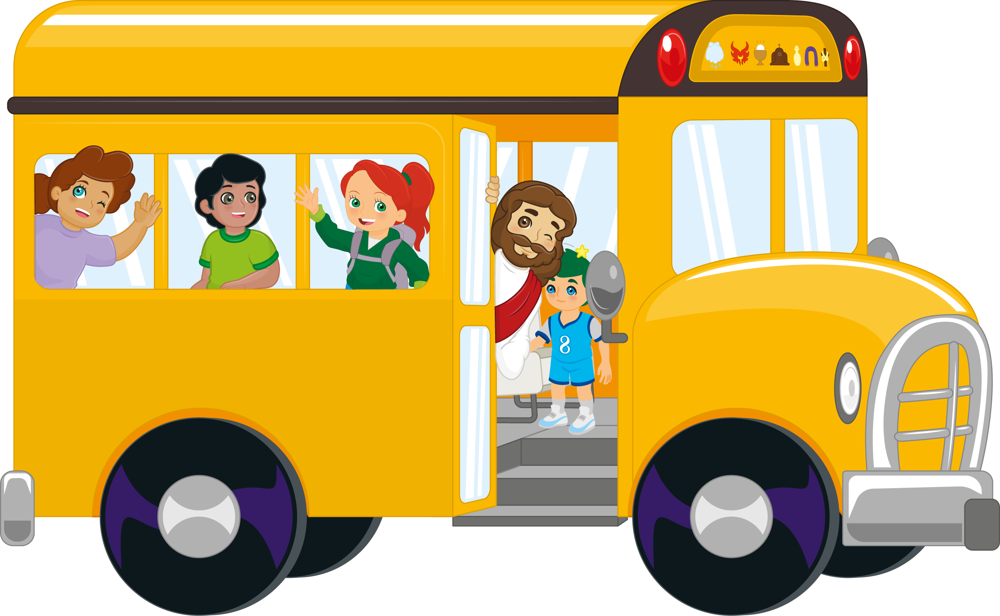
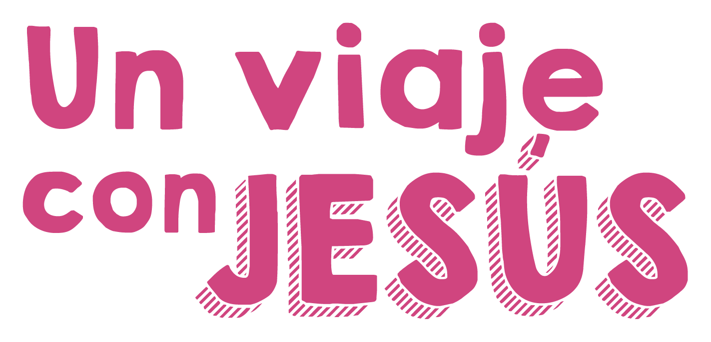

© Todos los derechos reservados Librerias y Ediciones Casa del Catequista
Para disfrutar de "La Ruta del Gran Viaje", por favor coloca tu celular de forma horizontal.
© Todos los derechos reservados Librerias y Ediciones Casa del Catequista